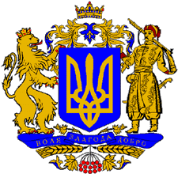

Ukrayna
Ukrayna
Savaş Yılları Sovyet döneminde Kiev de bayraklar genellikle Kırmızı tasvirler taşıyordu. Prens Volodymyr amblemi olduğu ve üçgen Gama şeklinde olduğu bilinmektedir. İlk Bayrak, Mavi zemin üzerine Altın Bir Zıpkın olarak düşülse de vazgeçilmiş.
Geçmiş dönem de Ukrayna ‘nın değişik bölgelerinde farklı bayrak şekilleri olduğu bilinmektedir. Bugün bile farklı işlemelere sahip bayraklar görmek mümkün. Hepsinin tarihinde kendine özgü yaşanmışlık vardır. Ulusal bayrak oluşumunda ise 13.üncü yüzyılda Batı Ukrayna Galiçya bölgesinde Daniel Galiçya ‘nın Mavi arka plan üzerine Oğul ve Altın Aslan figürü olduğu bir bayrak modeli yaptırdığı ve O dönem de aslanın Vatan olarak namus kavramı içinde değerlendirildiğini bilinmektedir.
1410 yılında Grunwald Savaşında da farklı şekilleri görülen bayrağı dönem içerisinde farklı figürlerle Litvanyalılar, Polonyalılar ve bölge de egemen diğer topluluklarında kullandığı bilinmektedir. Eski dönemden kalan kayıtlar içerisinde Kazak işaretlerinin barındığı geleneksel motiflerin de değişik tasvirlerde kullanıldığı bilinmektedir.
Avusturya İmparatorluğu dönemi, 1848 Mart Ayında çıkan Millet Ayaklanmasıyla Rus Galiçya-Volyn Devlet Krallığının amblemleri değişliğe uğrar. Dönem içerisinde arka plan renkleri aynı kalsa da amblem değişikliğinin bir çok kez yapıldığı bilinmektedir. 1918 – 1920 ‘li yıllar da Ukrayna Halk Cumhuriyetiyle birlikte ilk kez ulusal bayrak modeli belirlenmeye çalışılmış ve 2 farklı ulusal bayrak modeli oluşturulmuş. O yıllar da seçilen bayrak figürleri de Mavi arka plan üzerine altın desenli işlemeler takip etmektedir.
Ukrayna topraklarında yaşayan toplulukları tek bir bayrak altında toplama düşünceleri bu yıllarda hız kazanmaya başlar. Ulusal bayrağın ilk çizgilerini taşıdığı modeli Hetman Skoropadski tarafından önerilen ve zaman içerisinde bir çok sembolle şekillenen Mavi üzerine sarı şerit ile işlenen semboller oluşturmuş. Sovyet Ukrayna sında ise durum biraz değişir. Bayrak üzerinde Mavi ve Sarının yerine parlak bir kırmızı kullanılmış, bu çok hoş karşılanmasa da Ulusal sembollerin yasaklanması ve Kremlin yetkilerinin baskısı üzerine, dönemin Ternopil Kent Konseyi Lviv ve Ivano-Frankivsk te uzun bir süre Ulusal Bayrağı saklanır. Ulusal Bayrağın ilk defa Stryi ilçesinde 14 Mart 1990 ‘de tekrar dalgalandırıldığı bilinmektedir. 1990 Temmuz ayında efsanevi bayrak kaldırılır.
Ukrayna ulusal meclisinde 23 Ağustos 1991 yılında alınan kararla Mavi ve Sarı olarak belirlenen Ukrayna Bayrağı, Resmi Olarak 28 Ocak 1992 Ukrayna Bayrağı Mavi-Sarı Olarak Onaylanır. Ukrayna Başkanı Leonid Kuçma Kararnamesi ile 23 Ağustos 2004 ‘te bu gün Devlet Bayrak Günü olarak belirlenmiştir.
Ukrayna Anayasasına göre 3 Ulusal Sembol Geçerlidir;
Ukrayna Ulusal Marşı, ilk dörtlükte geçen “Shche ve vmerla” ukrayna devleti daha yokken 1862 yılında Şair Chubynskyi tarafından yazılmıştır. Bu şiir Lviv Tiyatrosunda bir rahip olan Mykhailo Verbytskyi ‘nin dikkatini çeker ve notalarla beslene şiir 1864 yılında bir koro eseri olarak seslendirilir. Döneminde popüler olan marş, o yıllarda milli olarak ilan edilmez. 2.nci dünya savaşı sırasında Carpatho-Ukrayna Cumhuriyeti ‘nin marşı olarak kabul edilir. “Shche ne vmerla Ukraina” Sovyet Birliği dağıldıktan sonra Ukrayna ‘nın Milli Marşı haline gelir. 1992 yılında müzik hükümet tarafından kabul edilir. Sözlerinde 2003 yılında biraz değişiklik yapılarak tekrar onaylanır.